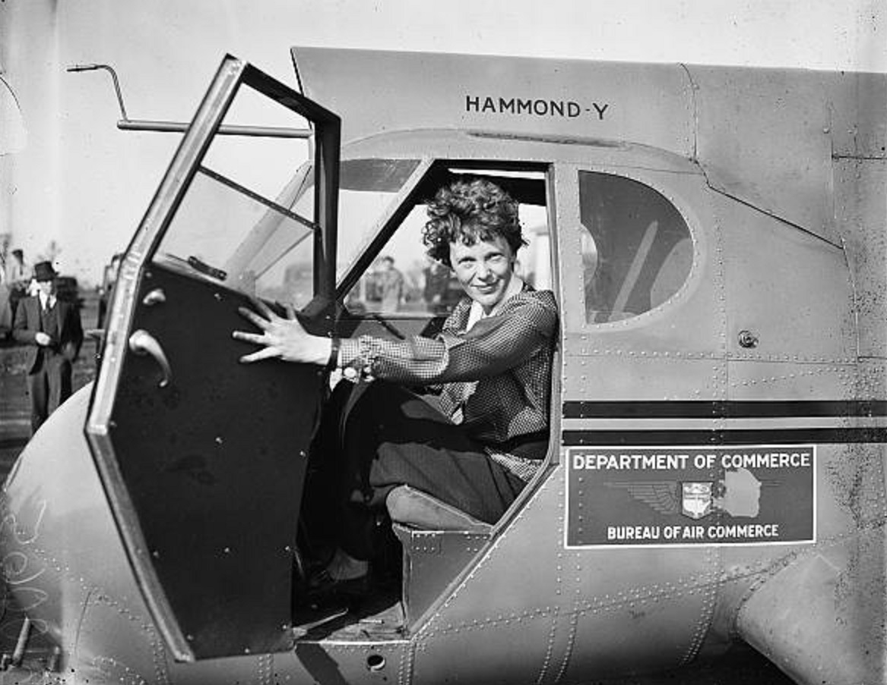

Amelia Earhart poses in her iconic aviator attire inside an aircraft, embodying her adventurous spirit and pioneering role in aviation.
Early Life and Education
July 24, 1897 - Amelia Mary Earhart was born in Atchison, Kansas.
Her interest for aviation started during World War I, when she volunteered at a military hospital, where she became intrigued by the role of flight in the war.
After the war, she briefly attended Columbia University before transferring to the University of Southern California, where she pursued her growing interests and aspirations.
Aviation Career
1920 - Amelia Earhart took her first plane ride, igniting a lifelong passion for aviation and prompting her to pursue flying lessons.
1922 - she purchased her first aircraft, but financial constraints forced her to sell it shortly after.
1928 - she was chosen as the first woman to fly across the Atlantic, serving as a passenger on a historic flight.
1932 - she made history again by becoming the first woman to fly solo nonstop across the Atlantic Ocean.
1935 - Earhart joined Purdue University as an aviation advisor and career counselor, where she dedicated her expertise to mentoring aspiring pilots and promoting the advancement of women in aviation.
Achievements and Records
Women’s Altitude Record (1922) - In 1922, Amelia Earhart set the women’s altitude record by reaching 14,000 feet, showcasing her exceptional flying skills and determination.
First Woman to Cross the Atlantic (1928) - In 1928, she became the first woman to cross the Atlantic by plane, flying as a passenger on the Fokker F.VII, which significantly raised her profile in aviation.
Co-founder of The Ninety-Nines (1929) - Earhart played a crucial role in founding The Ninety-Nines, an organization dedicated to supporting female aviators and promoting women in aviation.
First Woman to Fly Solo Across the Atlantic (1932) - In a landmark achievement, she became the first woman to fly solo nonstop across the Atlantic Ocean, earning her the American Distinguished Flying Cross.
Earhart received numerous accolades for her contributions to aviation, including the Cross of the French Legion of Honor and the Gold Medal of the National Geographic Society in 1932 for her remarkable achievements and inspiration to future generations.
Disappearance and Mystery
June 1, 1937 - Amelia Earhart departed from Miami with navigator Fred Noonan, aiming to become the first woman to fly around the world.
July 2, 1937 - they vanished and were last heard from near Howland Island.
A massive search effort was launched by the U.S. government, involving numerous ships and aircraft, but no trace of Earhart, Noonan, or their plane was found.
Earhart’s disappearance has fueled speculation and intrigue for decades, leading to numerous books, documentaries, and continued research into her final flight.